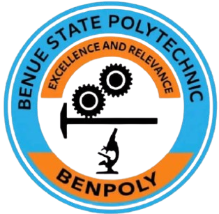
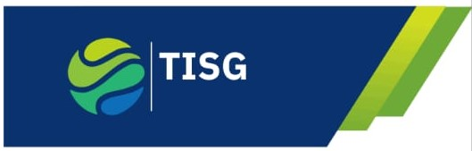
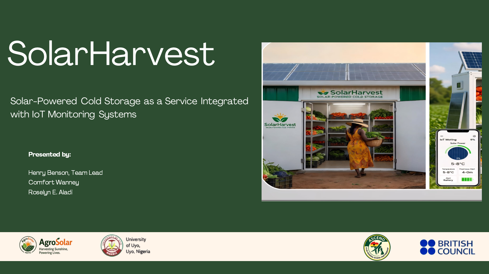

AgroSolar Technopreneurship and Innovation Centre (ASTIC)
HARVESTING SUNSHIE, POWERING LIVES
Explore Our ServicesHARVESTING SUNSHIE, POWERING LIVES
Explore Our ServicesTo harness renewable energy, scientific research and entrepreneurship to develop and deploy innovative technologies that create economic opportunities, empower communities and contribute to sustainable national development.
Explore More »To become a leading African centre for innovative, sustainable and commercially viable technologies that enhance agricultural productivity, reduce post-harvest losses and provide food security.
Explore More »Supported by the British Council and global partners, AgroSolar provides training, mentorship, funding opportunities, and access to international expertise in green technology.
Explore More »ASTIC focuses on renewable energy, agricultural innovation, sustainable materials, research, technopreneurship, skills development and international collaboration.
Nigeria

Ugbokolo, Nigeria
United Kingdom

Sustainable Technology Partner
Nigeria
Ugbokolo, Nigeria
United Kingdom
Sustainable Technology Partner
Nigeria
Ugbokolo, Nigeria
United Kingdom
Sustainable Technology Partner
Nigeria
Ugbokolo, Nigeria
United Kingdom
Sustainable Technology Partner
Explore our pitch presentation to discover the innovation, technology, partnerships and impact behind the AgroSolar Technopreneurship and Innovation Centre (ASTIC).

The AgroSolar pitch deck presents the challenges we are addressing, our solar-powered agro-processing innovation, our approach to sustainable agriculture, and the opportunities created through collaboration and technopreneurship.
Solar-powered agricultural solutions.
Solutions designed to reduce post-harvest losses.
Building practical skills through collaboration.
AgroSolar helps farmers preserve crops using solar-powered technology.